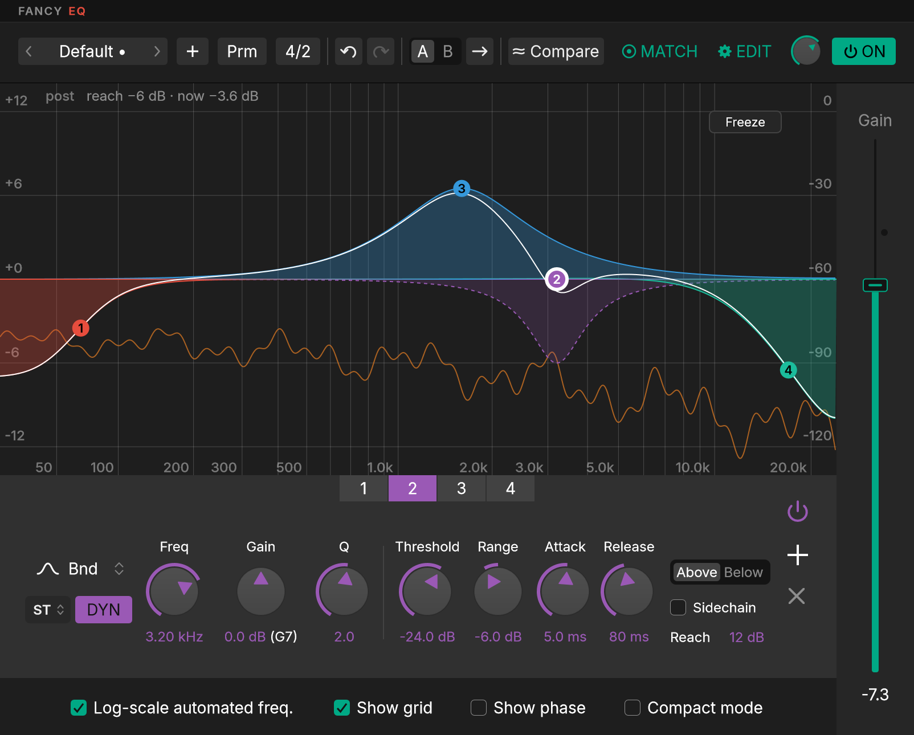

Fancy EQ: Phase 4 Wave 1 mockup
docs/eq.md, Phase 4 Wave 1. New things in dashed yellow, on the plugin's real screenshot (1x coordinates).
1 · Band solo (Decision 2 A) and Reach (Decision 4 A)
Holding Alt while dragging band 2's handle solos it: a purple halo on the handle and LISTENING in the title strip, for as long as the mouse is down. Reach sits under Sidechain in the DYN half, as a small value field in the band colour (the row has no room for a seventh knob); 12 dB is today's curve.

Alt-drag: solo band 2
LISTENING
Reach12 dB
auto −1.8
Reach types and drags like a knob's value (1 to 48 dB). auto −1.8 under the Gain fader is Auto gain's trim, shown only while Auto gain is on.
2 · Analyzer freeze and Pre + Post
Freeze sits at the graph's top right while the analyzer is on (the F key too). The frozen spectrum stays, dimmer, under the live one until Freeze is clicked again. The Analyzer menu gains Pre + Post at the end; Auto gain goes in the drawer's free third column.
Freeze is a view action: not saved, no undo step.
3 · EDIT drawer: Auto gain, and the Analyzer menu open
Auto gain under Peak hold. Off by default: today's output, to the bit.
Decision 3 A: the trim comes from the static curve, pink-weighted, so renders always match.